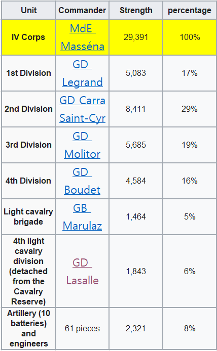
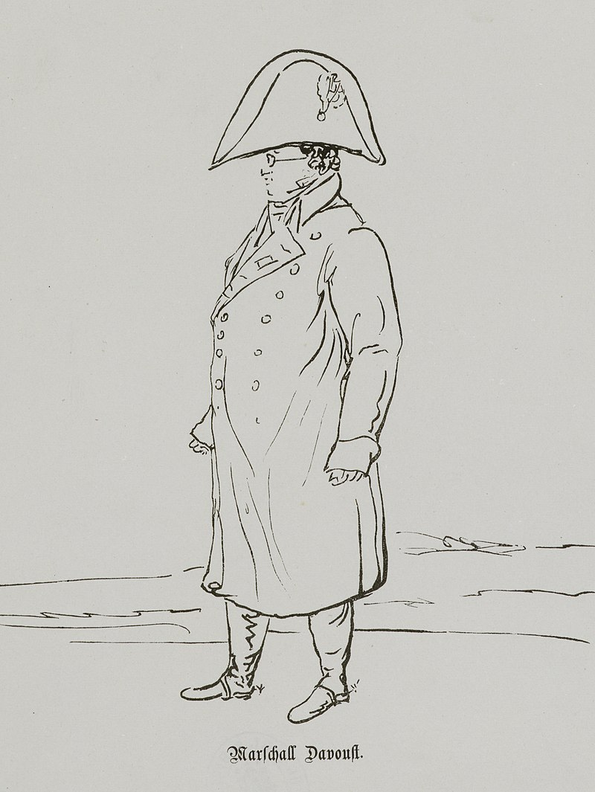
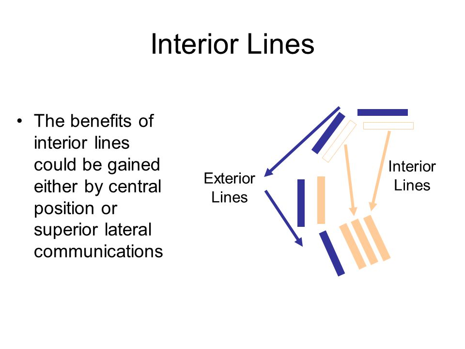

새로운 전쟁의 준비 (7) - 4만의 사나이
게시: 2023-11-27T06:30:14+09:00
여태까지 보신 연합군 사정 중에서 핵심을 고른다면, 다음과 같이 요약할 수 있습니다. 1) 나폴레옹이 오스트리아를 향해 침공을 개시할 것이라는 점에 대해 연합국 모두의 의견이 일치 2) 3개군을 편성하되, 예상되는 나폴레옹의 침공 방향에 따라 그 중 보헤미아 방면군에 주력을 집중 3) 연합국 누구도 단독으로 평화 협정을 맺지 못하도록 3개 방면군 각각을 여러 국가의 혼성 부대로 편성 4) 군복과 장비에는 부족함이 많았지만 야전군 병력은 51만으로 충분했으며, 군량은 비교적 넉넉한 상황 이와 대비하여, 나폴레옹의 준비 상황은 어땠을까요? 먼저, 나폴레옹이 8월 중순까지 끌어모을 수 있었던 병력은 약 44만이었습니다. 여기에는 37만2천의 보병과 3만의 포병 및 공병, 그리고 그토록 애타게 원했던 기병대가 약 4만 1천이었습니다. 여전히 충분한 편은 아니었습니다. 그 해 4월 20만 규모의 마인 방면군을 처음 편성했을 때 기병은 장교까지 포함하더라도 1만1천에 불과하여 전체의 약 5% 정도에 불과했던 것을 생각하면, 이젠 기병 비율이 거의 10% 가까이 되었으므로 나름 큰 개선이 있었던 셈입니다. 하지만 러시아 원정 때는 뮈라나 그루시 등이 이끌던 기병 군단들에 소속된 기병만도 4만2천이 훌쩍 넘었던 것을 생각하면 아직 부족한 편이긴 했습니다. 보통 프랑스 군단에는 보병과 포병 외에 기병도 전체 인원의 10% 정도로 구성된 기병 여단 1~2개를 포함하고 있었거든요.

(이 표는 1809년 바그람 전투에 투입된 마세나의 제4 군단의 편성을 보여줍니다. 나폴레옹이 창제한 군단이라는 개념은 일종의 작은 하나의 군(armée)으로서, 그 안에는 보병 포병 기병이 고루 갖추어져 있어 독자적인 작전이 가능했습니다. 보시다시피 2개의 기병 여단을 포함하고 있고, 그 숫자는 전체 병력의 11%에 달하는 것을 보실 수 있습니다.) 연합군이 야전군 외에도 약 35만의 2선급 부대를 여기저기 수비대 및 포위군, 예비대로 가지고 있었던 것처럼 나폴레옹도 약 12만의 병력을 여기저기에 수비대로 배치해놓고 있었습니다. 하지만 이들 대부분은 2선급 부대였습니다. 그 중 다부가 이끄는 함부르크 주둔 1만2천의 병력은 제1선급 부대였지만, 오데르 강 및 비스와 강변에서 아직도 농성하던 5만1천 정도의 병력은 1812년 러시아 원정에서 살아돌아왔으나 너무 쇠약해져 사실상 쓸모가 없게 된 병사들에 불과했고, 나머지도 나이가 너무 많거나 무장과 훈련이 변변치 않은 부대가 대부분이었습니다.

(1813년 함부르크를 지키고 있던 다부의 스켓치입니다. 안경을 낀 모습이 '강철의 원수'보다는 그냥 동네 아저씨처럼 보입니다. 나폴레옹에 대한 충성심에 있어서나 실력에 있어서나 에이스급 원수였던 그가 주전장에서 동떨어진 함부르크에서 수비대 대장 노릇을 한 것이 이상하게 보일 수 있습니다. 실은 나폴레옹과 그는 러시아 원정 이전부터 사이가 벌어지기 시작했는데, 모스크바로부터 후퇴하는 과정에서 다부의 군단이 후위부대 역할을 제대로 해내지 못하면서 나폴레옹과의 사이가 더욱 벌어졌습니다. 특히 크라스노이(Krasnoi) 전투에서 러시아군에게 그의 짐짝이 노획되었는데, 그 속에는 나폴레옹에게 하사받은 그의 원수봉이 들어있었고 이는 즉각 알렉산드르에게 전리품으로 진상되었습니다. 이렇게 원수봉을 뺴앗긴 것은 마치 부대가 부대 깃발을 빼앗긴 것과 같은 불명예라고 여겨졌고, 그는 이후 엘바 섬에서 나폴레옹이 돌아올 때까지 한 번도 나폴레옹과 대면하지 못했습니다. 흥미로운 점은 그의 짐짝 속에는 원수봉과 함께 중동, 중앙 아시아, 그리고 인도의 지도가 발견되었다는 것입니다. 그래서 러시아 원정 직전에 나돌던 소문, 그러니까 나폴레옹의 목적은 러시아를 굴복시킨 뒤 중앙 아시아를 거쳐 인도를 정복하는 것이라는 소문을 다부조차 믿었던 것이 아닐까 하는 생각도 듭니다.) 대신 질적인 면에서는 춘계작전 때보다는 나아진 편이었습니다. 그때는 그야마로 소년병들로 편성된 부대를 별다른 훈련도 하지 못하고 닥치는 대로 내보낸 것에 불과했는데, 아이러니하게도 가혹했던 춘계작전으로 인해 약한 병사들은 사상자라는 형태로 걸러지고 남은 병사들은 비록 어리더라도 단련된 고참병이 되었기 때문이었습니다. 앞서 언급한 대로 기병대는 여전히 말도 훈련도 부족한 편이었지만 포병은 질적으로 연합군에 비해 우세했습니다. 결론적으로 야전군 숫자에 있어, 나폴레옹은 연합군에 비해 약 4대5 정도의 비율로 열세였습니다. 이는 4월에 시작된 춘계작전과는 크게 다른 점이었는데, 이유는 물론 오스트리아의 참전이 가장 컸습니다만, 러시아 본토로부터의 대대적인 보충 병력 도착과 프로이센의 국민방위군(landwehr)을 포함한 적극적인 병력 동원도 큰 몫을 했습니다. 이렇게 병력면에서 열세에 놓이는 것은 나폴레옹의 계산에 없던 상황이었습니다. 그럼에도 불구하고 나폴레옹이 연합군에 비해 우세한 부분이 2가지나 있었습니다. 첫 번째는 총사령관이 바로 나폴레옹 자신이라는 점이었습니다. 비록 1812년 러시아 원정의 대실패라는 오점이 있기는 했으나 그의 이름은 여전히 유럽 전체를 벌벌 떨게 할 정도의 위세를 날리고 있었고, 당대 군사 지휘관 중에서 그보다 더 뛰어난 천재는 원래부터 없었고 게다가 그보다 많은 경험을 쌓은 군인도 없었습니다. 나중에 웰링턴이 나폴레옹에 대해 '그가 전장에 나타나는 것은 병력 4만 정도의 위력이 있다'라고 했는데, 그건 나폴레옹의 가치를 정확하게 표현하는 것이라고 할 수 있습니다. 4만 정도면 큰 규모의 1개 군단인데, 나폴레옹이 지휘를 맡는 것은 정말 그 정도의 위력을 발휘했습니다. 이건 대단한 칭찬이기도 하지만, 그의 한계를 표현하는 말이기도 했습니다. 그 이상으로 병력 차이가 벌어지면 나폴레옹도 어쩔 수 없다는 뜻이었으니까요. 두 번째는 바로 내선이동이었습니다. 당시의 포진은 연합군이 북쪽(북부 방면군), 동쪽(슐레지엔 방면군), 남쪽(보헤미아 방면군)의 3면에서 나폴레옹을 반원형으로 둘러싼 모습이었습니다. 이는 나폴레옹의 병력이 집중된 것에 비해 연합군의 병력은 분산되었다는 것을 뜻했고, 나폴레옹이 3개 방면군 중 어느 쪽을 골라 치더라도 연합군은 훨씬 더 긴 거리를 이동해야 공격 받는 아군을 도울 수 있다는 뜻이었습니다. 이건 나폴레옹의 장기, 즉 전체 병력은 적이 더 많다고 하더라도, 실제 전투가 벌어지는 곳에서는 자신의 병력이 더 많도록 만드는 것에 매우 유리한 상황이었습니다. 1797년 1월, 나폴레옹이 북부 이탈리아 리볼리(Rivoli)에서 불과 2만2천의 병력으로 2만8천의 오스트리아군을 격파할 수 있었던 것은 바로 그 내선이동을 잘 활용했기 때문이었습니다.

(1797년 리볼리 전투에서의 나폴레옹입니다. 제1차 대불동맹전쟁 당시 벌어진 이 전투에서 젊은 나폴레옹은 오스트리아의 노장 알빈치를 완파합니다. 여기서 승리한 나폴레옹은 곧 고립된 요새 만토바도 함락시켰고, 이제 수도 빈을 위협 당하게 된 오스트리아는 평화 협상에 응할 수 밖에 없었습니다.)

(내선은 군사 영어로는 interior lines라고 합니다. 물론 반댓말은 exterior lines인데, 이 그림은 내선이동의 장점을 잘 보여줍니다.) 이렇게 병력의 열세는 내선이동이라는 지리적 이점을 잘 활용하면 나폴레옹이라는 걸물이 충분히 극복할 수 있는 문제였습니다. 그러나 가장 큰 문제는 나폴레옹이 연합군의 분위기를 전혀 모르고 있었다는 점이었습니다. 여태까지 보셨듯이, 연합군은 모두 휴전이 만료되는 즉시 나폴레옹은 오스트리아를 전열에서 이탈시키기 위해 병력을 몰고 보헤미아를 선제공격할 것이라고 판단하고 있었습니다. 그러나 정작 나폴레옹은 그럴 생각이 없었습니다. 원래 나폴레옹은 40만의 전체 야전군 중 30만을 동원하여 20만 정도에 불과할 것이라고 그가 예상했던 슐레지엔의 러시아-프로이센 연합군을 숫자로 압도할 생각이었습니다. 그러나 오스트리아의 참전이 확정되자, 이런 계획은 당연히 변경될 수 밖에 없었습니다. 나폴레옹은 작센-슐레지엔-보헤미아 전장에 투입될 수 있는 오스트리아군의 수는 아마도 10만, 최대 12만을 넘지 못할 것이라고 판단했습니다. 이유는 오스트리아 제국의 지리적 위치 때문이었습니다. 오스트리아가 많은 곳과 국경을 접한 내륙의 제국이었기 때문에, 먼저 오스트리아는 이탈리아와의 국경지대에 적어도 5만을, 그리고 산악지대로 이루어진 바이에른과의 국경에도 적어도 3만의 병력을 배치해야 했기 때문입니다. 보헤미아 방면군에 투입된 오스트리아 야전군의 병력은 약 12만7천이었으니, 나폴레옹의 판단은 거의 정확한 편이었습니다. 하지만 나폴레옹은 선제공격을 할 생각이 없었고 엘베 강변에 병력을 깔아두고 방어 태세를 취한 뒤, 연합군이 어떻게 나오는지를 살펴볼 계획이었습니다. 이건 전쟁의 주도권을 적에게 넘겨주는 모양새였습니다. 원래 싸움의 고수는 절대 적에게 주도권을 넘겨주지 않는 법입니다. 나폴레옹도 언제나 공격이 최선의 방어라는 것을 전적으로 보여주었습니다. 그런데 왜 이렇게 소극적으로 나왔을까요? 어쩌면 나폴레옹이 작년의 대실패 때문에 조심스러워진 것일 수도 있었습니다. 그런데, 나폴레옹이 평소의 그답지 않게 수비적으로 나오려면 먼저 갖추어야 할 것이 있었습니다. 바로 보급이었습니다. 그는 언제나 전진했고 그것도 빠르게 전진했습니다. 그럴 때는 언제나 새롭게 점령한 적의 영토에서 현지조달로 보급 문제를 해결했습니다. 그러나 이제 엘베 강변에 주저앉아 적의 행동을 지켜 보려면 장기간 버틸 식량이 준비되어야 했습니다. 이 문제는 결국 블뤼허에게 새로운 기회를 부여합니다. Source : The Life of Napoleon Bonaparte, by William Milligan Sloane Napoleon and the Struggle for Germany, by Leggiere, Michael V https://en.wikipedia.org/wiki/Wagram_order_of_battle https://en.wikipedia.org/wiki/Louis-Nicolas_Davout https://shannonselin.com/2014/01/napoleons-nemesis-duke-wellington/ https://en.wikipedia.org/wiki/Battle_of_Rivoli